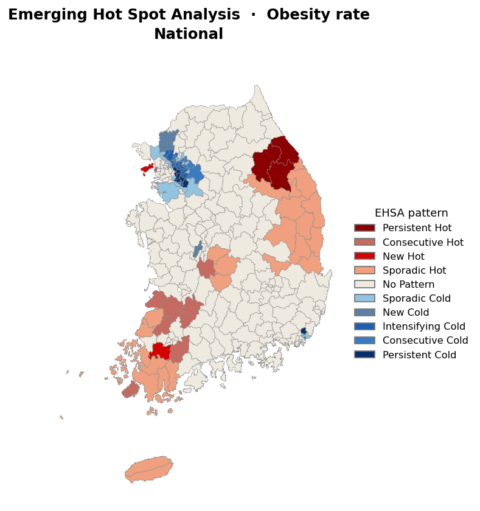
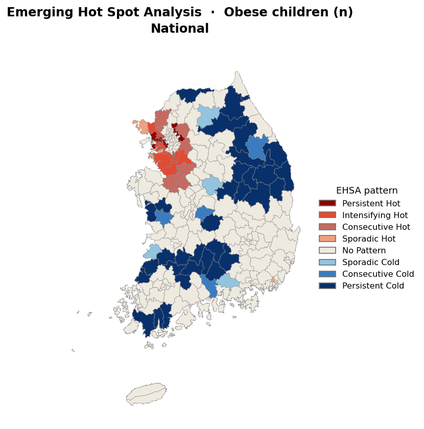
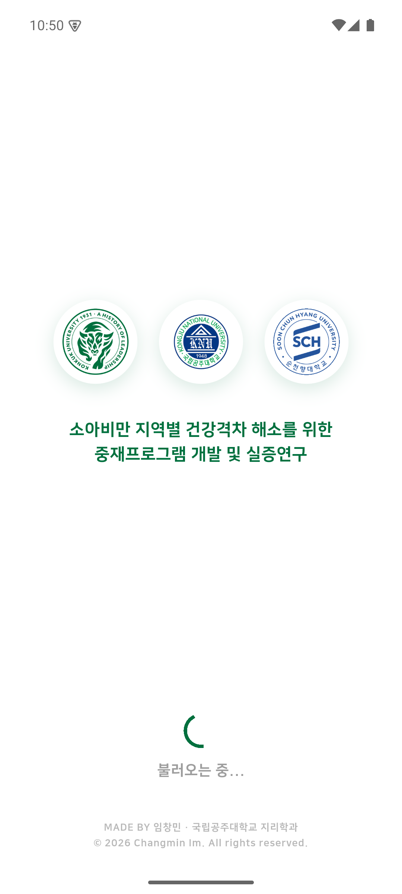

어디에서 시작하고,
무엇을 바꿀 것인가
발생 핫스팟 분석(EHSA)으로 찾은 우선 지역 × 시공간 회귀(MGTWR)로 확인한 환경 요인,
그리고 이동기록 앱 '아이걸음'으로 여는 현장 실증
임창민 (국립공주대학교 지리학과) · 이현희 (건국대학교 지리학과)
오늘의 흐름 — 네 개의 질문
어느 지역이
꾸준히 높은가?
12년(2012–2024) 자료로 비만율·아동수의 시공간 핫스팟을 추적합니다. 중재 후보지 선정의 출발점입니다.
왜 그 지역이
높은가?
어떤 지역환경 요인이, 어느 지역에서, 어느 시기에 비만율과 연결되는지 시공간 회귀로 확인합니다.
어디부터,
무엇을 바꿀까?
두 분석을 포개어 후보지 30곳의 우선순위를 정하고, 지역별 프로그램 방향을 제안합니다.
효과를
어떻게 잴까?
중재 전후 아이의 실제 활동 변화를 측정하는 연구용 GPS 앱을 소개합니다. 안드로이드 배포를 시작했습니다.
핵심 메시지: "문제가 몰린 곳(EHSA)과 바꿀 수 있는 요인(MGTWR)이 서로 맞물린다 — 우선순위와 프로그램 내용을 데이터로 정할 수 있고, 효과는 아이걸음으로 잰다."
발생 핫스팟 분석(EHSA)
— 어디가, 언제부터, 얼마나 꾸준히 높은가
한 해 수치가 아니라 12년의 흐름으로 봅니다. 우연히 한 번 높은 곳과, 꾸준히 높은 곳을 구분합니다.
EHSA는 무엇을 보나 — "한 해"가 아니라 "흐름"
- 매년 시군구마다 "주변보다 유의하게 높은가"를 점수화 (시공간 핫스팟 통계 Gi*)
- 그렇게 쌓인 13년(2012–2024)의 점수 흐름을 보고 패턴을 분류 — 꾸준한 곳·심해지는 곳·새로 나타난 곳
- 대상: 전국 252개 시군구 × 지표 3종(비만율 · 과체중이상율 · 비만 아동수) × 전국/11개 권역 기준
- 보완: 섬 지역 연결 가중, 다중검정 보정(FDR)으로 우연한 핫스팟을 걸러냄 — ArcGIS 표준 방식 준용
차가운 반대 패턴(콜드스팟, 파란 계열)도 같은 방식으로 분류됩니다. 오늘은 핫스팟 중심으로 보고합니다.
전국 비만율 핫스팟 42곳 — 다섯 개의 벨트

| 벨트 | 대표 시군구 | 패턴 |
|---|---|---|
| 강원 영동 | 강릉·평창·정선 + 영월·동해·태백·삼척 | 전국 유일 '지속' 3곳 포함 |
| 충북 남부 | 옥천·영동 + 금산(충남) | 산발·연속 |
| 경북 북부·동해안 | 울진·영양·청송·봉화·영덕·안동·포항 북구 | 산발 다수 — 수치 최상위권 (청송 23.5% · 영양 22.6%) |
| 전남 서남해안 | 진도·신안·완도·영암·무안·목포·해남 | 진도 '연속' — 2024년 25.4% 전국 최고 수준 |
| 전북 내륙 | 순창·부안·정읍·임실 + 고창·무주 | '연속' 밀집 |
| 제주 | 제주시·서귀포시 | 산발 |
- 252곳 중 핫스팟 42곳 (지속 3 · 연속 8 · 신규 3 · 산발 28) — 대부분 농촌·산간·어촌
- 수도권·대도시는 오히려 콜드스팟(비만율이 꾸준히 낮은 곳)이 많음 — 뚜렷한 도농 격차
또 하나의 렌즈 — 비만 "아동수" 핫스팟
비율이 낮아도 아이가 많으면 비만 아동의 절대 수는 많습니다. 규모의 렌즈로 보면 지도가 뒤집힙니다.

| 시군구 | 비만 아동수(2024) | 패턴 |
|---|---|---|
| 화성시 | 603명 | 강화 |
| 남양주시 | 396명 | 연속 |
| 평택시 | 392명 | 강화 |
| 인천 서구 · 시흥시 | 각 350명 | 지속 · 강화 |
| 파주시 · 광주시 · 김포시 | 292 · 268 · 261명 | 연속 · 강화 |
| 아산시 · 천안 서북구 | 241 · 228명 | 연속 |
- 지속·연속·강화 핫스팟 35곳 = 수도권 32 + 충남 천안·아산권 3
- 비율 벨트(농촌)와 규모 벨트(수도권)는 겹치지 않는다 → 중재 지역 선정에 두 축이 모두 필요
인터랙티브 지도 — 전국 + 11개 권역, 연도별 재생
탭: 전국·수도권·서울·충청권·전라권·경상권·강원·제주 등 12개 · 모드: 연도별 핫스팟(Gi*) / EHSA 패턴 · 지표: 비만율·과체중이상율·아동수 · 연도 슬라이더 2012–2024
EHSA가 고른 중재 후보지 30곳 — 두 축 + 전략 거점
고비율 축
비만율·과체중이상율 핫스팟 벨트에서 군집 대표 선정
강원 영동 4 · 충청 4 · 전남 2 · 경북 4 · 제주 2
농촌·산간 중심
규모 축
비만 아동수 핫스팟에서 선정
서울 3 · 경기·인천 8 · 충남 2
수도권·대도시 중심 (화성 603명 등)
전략 거점
원주시 — 도농복합 특성을 살린
프로그램 검증·비교 거점
통계보다 전략적 선택
- "꾸준히 높은 곳"(비율)과 "아이가 많은 곳"(규모)을 함께 담은 리스트 — 형평과 효율의 균형
- 그런데 이 30곳이 정말 맞는 선택일까? → 독립적인 두 번째 분석(MGTWR)으로 검증 — 2·3부
시공간 회귀(MGTWR)
— 왜 그 지역이 높은가
지역환경 요인의 효과가 지역마다, 해마다 어떻게 다른지 직접 추정합니다.
자료·변수·모형 한눈에
자료
- 종속변수: 시군구 영유아 비만율·과체중이상율
229개 시군구 × 2015–2023 (n=2,061) - 독립변수: KOSIS 21종 후보 → 이론·다중공선성 진단으로 7종
- 사전 진단: 모든 연도에서 비만율의 공간 군집성 유의(Moran's I, p≤0.001) → 공간을 무시하는 회귀는 부적합
7개 환경 변수 (가설 방향)
| 영역 | 변수 | 방향 |
|---|---|---|
| 사회경제 | 기초생활수급률 | + |
| 가족·사회 | 1인가구비율 | + |
| 조이혼율 | + | |
| 건조환경 | 인구밀도 | ± |
| 아파트비율 | − | |
| 인구 동태 | 청년순이동률 | − |
| 의료 접근 | 천명당 의사수 | − |
모형: OLS → GWR → MGWR → GTWR → MGTWR
단계마다 제약을 하나씩 풉니다 — 계수가 지역마다 다를 수 있게(GWR), 변수마다 다른 범위에서 움직이게(MGWR), 해마다 달라질 수 있게(GTWR), 그리고 변수별로 공간·시간 스케일을 따로 추정(MGTWR).
모형 성능 — 설명력 36% → 75%
- 두 지표 모두 MGTWR가 최종 우위 — 잔차의 공간 자기상관도 사실상 해소
- 지역 차이 반영(OLS→GWR)보다 시기 차이 반영(GWR→GTWR)의 개선 폭이 더 컸음 — 분석 기간에 비만율 수준 자체가 요동(전국 평균 8.4%→15.6%→11.6%)했기 때문
비만율 모형
과체중이상율 모형
AICc는 낮을수록, R²는 높을수록 좋음. 잔차 Moran's I가 0에 가까우면 공간 패턴을 모형이 다 설명했다는 뜻.
변수마다 힘이 미치는 범위가 다르다 — 세 유형
① 좁은 지역 · 해마다 달라짐
수급률(+) · 조이혼율(+)청년순이동(−) · 아파트(−)
좁은 권역에서, 해마다 다르게 작동
→ 지역·시기 맞춤 개입 대상
② 좁은 지역 · 늘 일정
인구밀도(±)지역마다 다르지만 9년 내내 일정
→ 구조적 배경 변수
③ 전국 공통
1인가구 · 의사수어디서나, 어느 해든 같은 효과
→ 전국 단위 정책 대상
읽는 법 — 스케일은 어떻게 재나
- bw(공간 범위) = 계수 추정에 빌려 쓰는 이웃 수 — 작으면 좁은 권역에서 움직이는 요인, 크면 사실상 전국 공통
- τ(시간 범위) = 다른 연도 정보를 얼마나 차단하는지 — 크면 해마다 달라지는 요인, 0에 가까우면 늘 일정
요인의 스케일 = 정책의 스케일. ①은 시군구 맞춤 프로그램으로, ③은 전국 제도로 대응하는 것이 맞습니다.
로컬 계수 지도 — 어느 지역에서, 어느 해에 유의한가
2부 요약 — 무엇이, 어디서, 어떻게
- 위험 요인: 기초생활수급률(+) · 조이혼율(+)
저소득·가족구조 취약 지역에서 비만율이 높음 - 보호 요인: 아파트비율(−) · 청년 유입(−) · 의사수(−)
주거·활동 환경과 지역 활력이 좋은 곳은 낮음 - 코로나19는 격차를 증폭 — 평균 수준은 회복 중이지만, 환경 요인의 기울기는 강해진 채 유지 (아직 닫히지 않은 격차)
- 전국 평균 회귀(OLS)의 함정 확인 — 아파트비율은 전국 평균으로는 +로 보이지만, 지역별로 보면 대부분 −(보호) — 방향까지 뒤집힘
코로나 전(15–19) → 후(20–23) 평균 계수 변화
굵은 음영 = 변화 큰 변수. 시기 가변 4개 변수 모두 코로나 이후 효과가 강해짐.
EHSA × MGTWR 교차 검토
— 어디부터, 무엇을 바꿀 것인가
후보지 30곳에서 실제로 어떤 환경 요인이 작용하는지 확인하고, 우선순위와 프로그램 방향을 정합니다.
왜 함께 보나 — 두 분석의 역할이 다르다
EHSA — 어디가?
- 비만 문제가 어느 지역에 꾸준히 몰려 있는지 알려줍니다
- 비만율·과체중이상율·아동수의 12년 시공간 군집
- → 후보지 30곳 선정의 근거
MGTWR — 왜? 무엇을?
- 그 지역에서 어떤 환경 요인이 작용하는지 보여줍니다
- 지역·시기별로 유의한 요인 (수급률·이혼율·청년이동·아파트)
- → 무엇을 바꿀지, 프로그램 내용의 근거
- 문제가 몰린 곳(EHSA) × 바꿀 수 있는 요인(MGTWR) = 우선순위와 프로그램 설계를 한 번에
- 판단 기준: 보정된 유의성 검정으로 2020–23년 4년 중 절반 넘게 유의하면 그 지역의 "꾸준한 요인"으로 봄
선정 축과 환경 요인이 정확히 맞물린다
| 선정 축 | 꾸준히 유의한 요인 (MGTWR) | 의미 |
|---|---|---|
| 고비율 축 16곳 (농촌·산간) |
아파트(−) 16곳 전부 · 수급률(+) 10곳 · 청년이동(−) 6곳 | 저소득·지역 쇠퇴·주거환경이 실제로 작용 → 환경을 바꾸는 중재의 여지가 큼 |
| 규모 축 13곳 (수도권·대도시) |
이혼율(+) 13곳 전부 — 사실상 하나의 요인 | 가족구조 경로가 공통 → 표준 프로그램을 크게 적용 |
| 전략 거점 원주 | 꾸준한 요인 1개(청년이동−) · 2023년 유의 요인 없음 | 통계 근거는 약함 → 검증·비교 거점으로 활용 |
- 서로 독립적인 두 분석이 같은 공간 구도로 수렴 → 후보지의 두 축 구성은 타당
- 여기에 "요인이 몇 개나 겹치는가"를 더하면 우선순위가 나온다 →
후보지 30곳 — 우선순위 그룹 지도
우선순위 제안 — 문제의 크기 × 겹치는 요인 수
A 최우선 (5곳)
옥천 · 영동 · 영월울진 · 영양
요인 3개가 동시에 작용
복합 취약지
A′ 우선 (9곳)
강릉 · 정선 · 평창 · 목포 · 무안제주시 · 서귀포 · 아산 · 천안
요인 2개
저소득+주거 / 가족+주거
B 규모 효율 (11곳)
수도권 규모 축(화성 603명 · 평택 · 시흥 우선)
이혼율 하나가 공통
표준 프로그램 대량 적용
C 요인 하나·전략 (5곳)
보령 · 서천 · 청송 · 포항 북구+ 원주(전략)
아파트(−) 하나
원주는 검증 거점
그룹 기준: 꾸준한 요인 3개=A · 2개=A′ · 규모 축의 1개=B · 그 외=C. 기준은 협의로 조정 가능(별첨 엑셀).
요인별 개입 방향 — 요인이 프로그램의 내용을 정한다
| 꾸준한 요인 | 해당 후보지 | 개입 방향 |
|---|---|---|
| 기초생활수급률(+) | 강원 영동권 4 · 전남 2 · 울진·영양 · 제주 2 | 저소득 가정 영양·신체활동 지원 (바우처·급식 질) 상시 운영 |
| 조이혼율(+) | 수도권 13곳 전부 + 충청 북부(아산·천안·옥천·영동) | 한부모·맞벌이 가정 아동 돌봄·생활습관 프로그램 |
| 청년순이동(−) | 옥천·영동·영월·울진·청송·영양 | 지역활력·정주여건 사업과 아동건강 사업 연계 |
| 아파트비율(−) | 고비율 축 전부 | 비아파트 주거지 중심 놀이·활동 공간 조성 |
같은 "비만율 높은 지역"이라도 작용하는 요인이 다르면 프로그램의 내용이 달라져야 합니다.
추가 검토 두 곳, 그리고 3부의 결론
진도군 (전남)
- 2024년 비만율 25.4% — 전국 최고 수준, EHSA '연속' 핫스팟
- 꾸준한 요인: 수급률(+) · 아파트(−)
- 목포·무안이 군집 대표라면 규칙상 빠질 수 있으나 개별 검토 가치
보은군 (충북)
- 전국에서 유일하게 요인 4개가 모두 꾸준히 유의 + 비만율 16.7%
- 수급률+ · 이혼율+ · 청년이동− · 아파트−
- 같은 충북 남부 군집의 옥천과 교체 또는 추가 검토
"EHSA가 고른 곳에서 MGTWR의 요인이 실제로 작용한다 —
두 축 선정은 타당하고, 요인이 우선순위와 프로그램 내용을 정해 준다."
이동기록 앱 '아이걸음'
— 중재 효과를 어떻게 잴 것인가
어디에(1부) · 왜(2부) · 무엇을(3부)까지 왔습니다. 남은 질문은 하나 — "프로그램이 실제로 아이의 하루를 바꾸는가".
왜 이동기록인가 — 설문이 아니라 실측
- 중재 프로그램의 실증에는 아이의 실제 생활 변화를 재는 도구가 필요합니다 — 기억에 의존하는 설문은 아이의 하루를 놓치기 쉽습니다
- 아이걸음은 3초 간격 GPS로 하루의 이동을 통째로 기록합니다 → 이동 거리 · 활동 반경 · 바깥 활동 시간을 객관적으로 산출
- 2·3부에서 주거·활동 환경(아파트비율−)이 꾸준한 요인으로 확인됐습니다 — 아이가 실제로 어디서 얼마나 움직이는지가 프로그램 평가의 핵심 지표가 됩니다
- 중재 전·후 비교, 지역 간 비교(중재지 vs 비교지)에 그대로 활용
수집 자료
위치 궤적(GPX·KML) — 기기 안에만 저장되며, 보호자가 '보내기'를 누른 경우에만 연구팀에 전달됩니다.
아이걸음 — 버튼 하나로 기록되는 아이의 하루
- 참가자 번호 입력 → 기록 시작 — 조작은 이게 전부
- 화면이 꺼져도, 다른 앱을 써도 하루 종일 자동 기록 (배터리 사용 15~30%)
- 기록은 기기에만 저장 — 인터넷 자동 전송 없음
- 기록 종료 후 카카오톡·메일로 보내기 (GPX·KML·ZIP)
- 삼성 등 기종별 배터리 설정까지 안내 카드로 내장



하루 세 번의 터치, 그리고 배포 현황
아침 — 기록 시작
집을 나서기 전 앱을 열고
기록 시작 버튼
하루 종일 — 자동
아무것도 안 해도 됩니다
화면이 꺼져도 계속 기록
저녁 — 종료·보내기
귀가 후 기록 종료 →
보내기로 연구팀 전송
배포 현황
- 안드로이드: APK 배포 중 — 다운로드 페이지 + 설치 매뉴얼 + FAQ + 참가자 안내문 완비
- 아이폰(iOS): 개발 완료, TestFlight 배포 준비 중
다운로드

다운로드 페이지
건국대 · 국립공주대 · 순천향대
연구단 공동 활용
오늘 드리는 제안
"어디에서 — EHSA가 고른 30곳,
무엇을 — 지역별 요인에 맞춘 프로그램,
어떻게 확인하나 — 아이걸음으로 실측."
- 후보지 30곳의 두 축(고비율·규모) 구성은 타당 — 독립적인 두 분석이 같은 결론으로 수렴
- 투입 순서 제안: A 최우선 5곳(옥천·영동·영월·울진·영양) → A′ 9곳 → 규모 축 11곳
- 추가 검토 2곳: 진도(비만율 전국 최고 수준) · 보은(요인 4개 모두 유의) / 원주는 검증 거점
- 프로그램 내용은 지역별 꾸준한 요인에 맞춰 설계 — 저소득 지원 · 가족 돌봄 · 활동 공간
- 아이걸음으로 중재 전후 활동 변화 측정 — 실증 데이터 수집을 시작합니다
더 보기: MGTWR 연구 발표 · 교차 검토 상세 · 학술 스토리맵 · EHSA 인터랙티브 지도